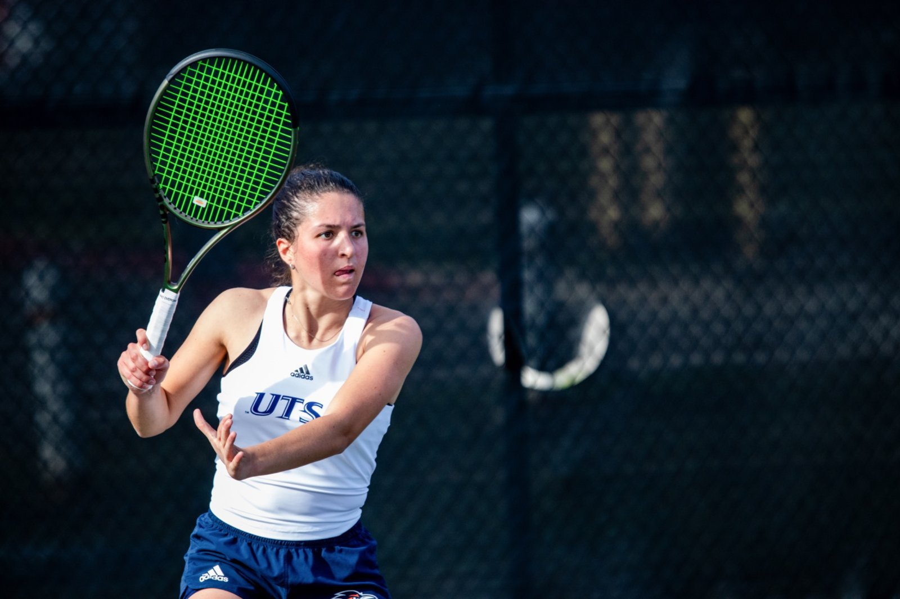
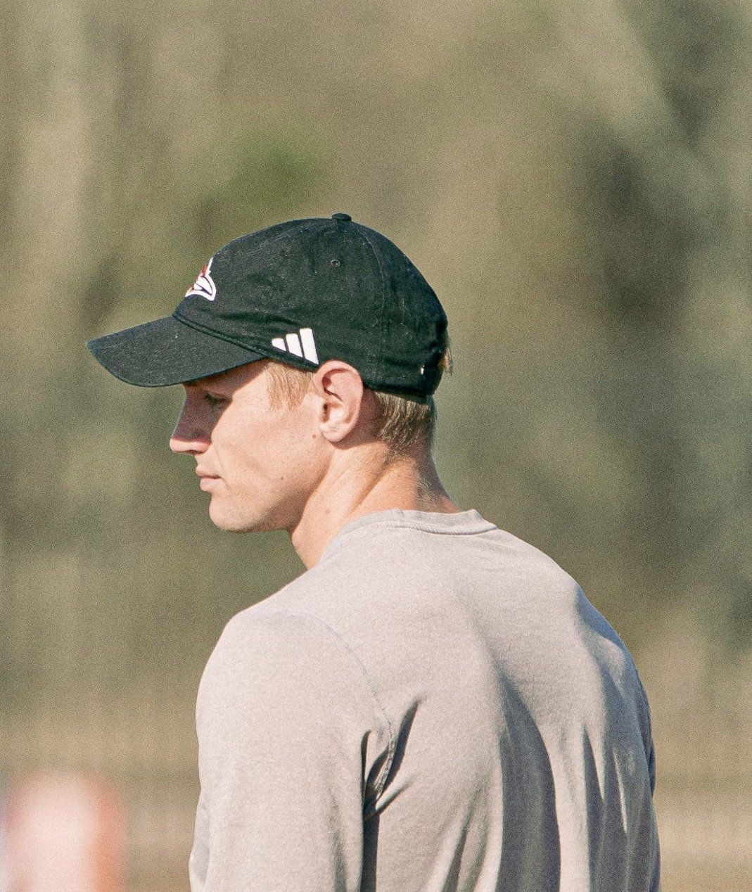
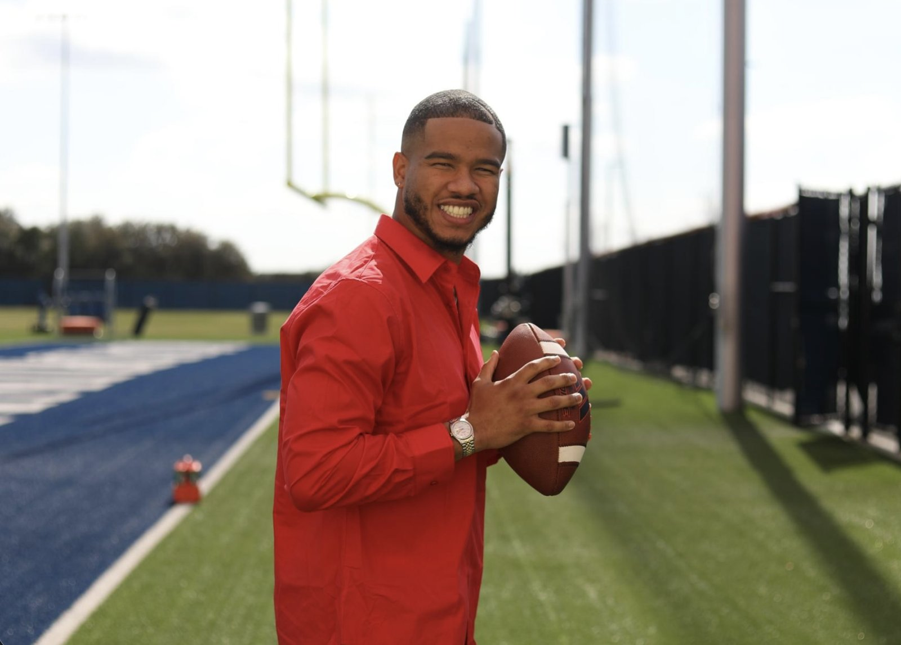
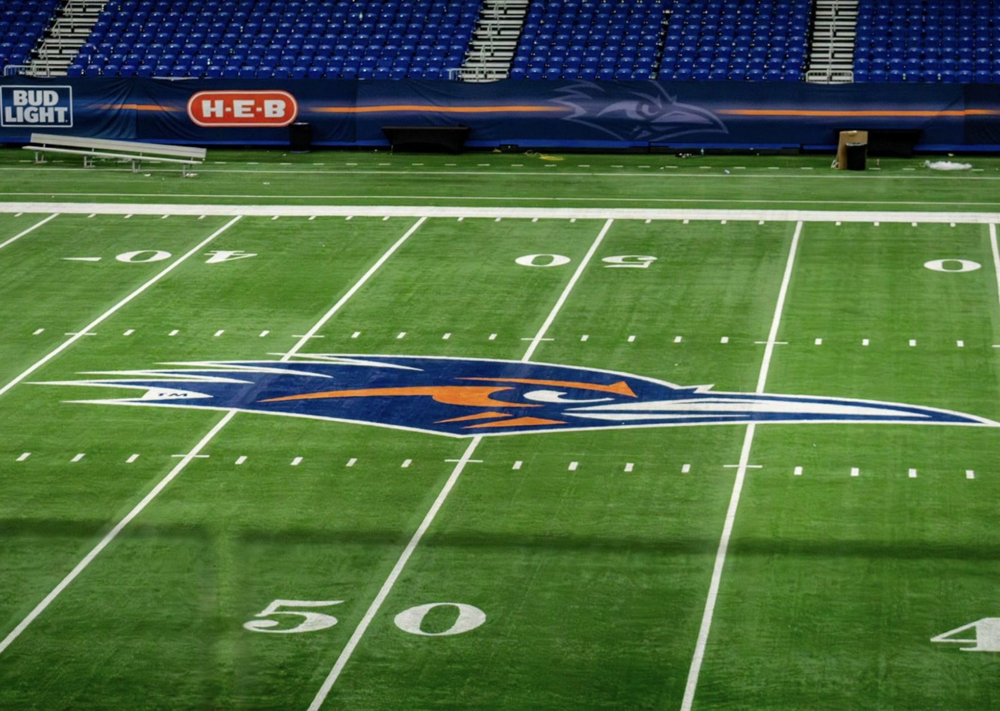
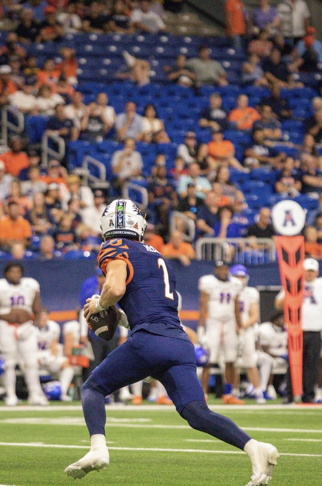
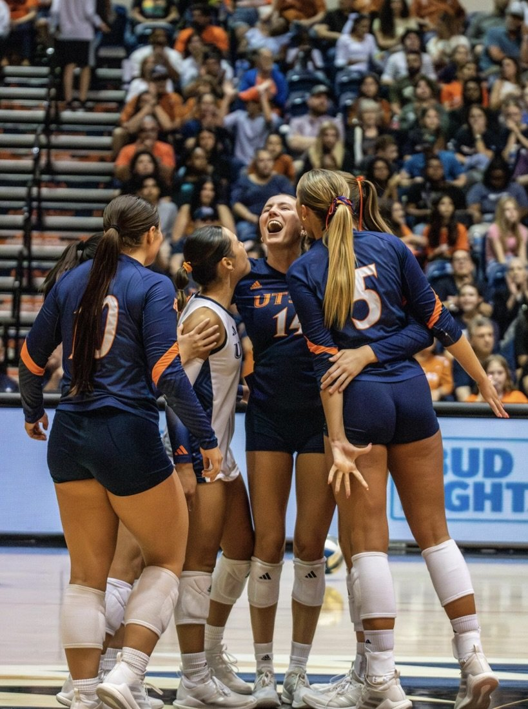

Vittoria Baccino Has the Fighting Spirit of a Pro
Baccino earned AAC Player of the Week honors after delivering the deciding point for UTSA in consecutive victories over Tarleton State and the University of Houston.
Read published storyI’m Haley Aguayo Rocha, a sports journalist and communications professional interested in the stories, people and details that connect teams with their communities.
Explore my workA portfolio built around curiosity, preparation and a genuine connection to sports.
My experience spans sports reporting, newsroom leadership, event operations and athletic communications. At The Paisano, UTSA’s independent student newspaper, I grew from assistant sports editor into sports editor, helping guide coverage while reporting on Division I and club athletics.
From coordinating interviews and credentials to editing coverage and producing print and digital content, I’ve learned that strong sports communications depend on preparation, accuracy and relationships.
I’m completing my studies in digital communications at The University of Texas at San Antonio and building toward a career in professional sports communications and media relations.
Selected reporting from The Paisano, from athlete profiles to enterprise journalism and game-day coverage.

Baccino earned AAC Player of the Week honors after delivering the deciding point for UTSA in consecutive victories over Tarleton State and the University of Houston.
Read published story
A behind-the-scenes look at Christiaan Le Roux’s journey to becoming a three-time conference champion and one of the top five track and field performers in UTSA program history.
Read published story
Ahead of the first Super Bowl featuring two Black starting quarterbacks, UTSA quarterback Frank Harris reflects on representation, identity and the challenges Black athletes face at the position.
Read published storyUTSA athletics officials outlined how a proposed student fee increase would support departmental growth, conference competitiveness and greater national recognition.
Read published story
UTSA dismissed two football players, Booker and Lucius, ahead of the 2024 season following their involvement in a robbery.
Read published story
Following consecutive losses to Texas State and the University of Texas, UTSA bounced back with three second-quarter scoring drives to secure a victory over Houston Christian.
Read published story
UTSA closed its spring volleyball schedule with a loss to Texas as defensive errors hindered the Roadrunners throughout the match.
Read published storyEditorial leadership, event operations and multimedia storytelling.
Sports editor experience: assigning coverage, managing writers, editing stories and helping shape the paper’s sports coverage across print and digital platforms.
Behind-the-scenes experience supporting the Frisco Bowl at Ford Center, including coordination involving vendors, credentials, hospitality and event staff.
Game coverage, feature reporting and storytelling across UTSA Division I athletics, club sports and the wider San Antonio sports community.
Sports editor experience: assigning coverage, managing writers, editing stories and helping shape the paper’s sports coverage across print and digital platforms.
Behind-the-scenes experience supporting the Frisco Bowl at Ford Center, including coordination involving vendors, credentials, hospitality and event staff.
Social publishing, action photography, photo and video editing, podcast relaunch work and sports content designed to reach fans where they are.
A mix of editorial judgment, communication skills and hands-on production experience.
Experience across student media, collegiate athletics and major sporting events.
Assistant Sports Editor and Sports Editor. Reported and edited sports coverage, led a team of writers, coordinated assignments and interviews and contributed to print, podcast and social content.
Sports events operations intern supporting event logistics, credentials, hospitality and coordination with event stakeholders and broadcast personnel.
Strategic communications support, including web content and internal communications projects.
Coverage and event experience connected to organizations and events including the San Antonio Spurs, San Antonio FC, San Antonio Missions and Valero Texas Open.
Interested in sports communications, media relations and opportunities to help teams tell their stories. I’d love to connect.